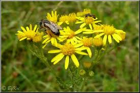

Séneçon

Séneçon (Senecio jacobaea de la famille des Astéracées)
Attention : hautement toxique par ingestion pour le Korat !
Partie toxique pour les chats en général et le Korat en particulier :
Toute la plante, la plus haute teneur dans les jeunes plantes et les fleurs.
Symptômes du processus pathologique :
Amaigrissement, vertiges, marche sans but (Walking Disease), agitation, bâillements fréquents, dépression, coma, Constipation ou diarrhée contenant du sang, Jaunisse, Crampes, Cécité.
Origine de la toxicité (principe actif) :
Pyrolizidine.